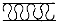
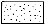
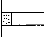
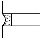
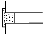
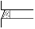

전산응용건축제도기능사 (2003-07-20 기출문제)
1과목: 건축구조
1. 연약한 지반에 있어서 부동침하를 방지하는 대책에 대한 설명으로 잘못된 것은?
- 건물을 경량화 한다.
- 건물의 구조강성을 높인다.
- 평면상으로 보아 건물의 길이를 짧게 한다.
- 인접 건물과의 거리를 가깝게 한다.
(정답률: 79%)

2. 지반의 허용지내력도가 가장 큰 지반은?
- 자갈
- 모래
- 점토
- 모래섞인 점토
(정답률: 74%)
3. 건물의 하부 전체 또는 지하실 전체를 하나의 기초판으로 구성한 기초로서 매트 슬래브 기초 또는 매트 기초라고 불리는 것은?
- 독립기초
- 줄기초
- 복합기초
- 온통기초
(정답률: 77%)
4. 조적조에서 벽량의 산출식으로 옳은 것은?
- 벽량 = 그 층의 바닥면적(㎡) / 내력벽의 전체길이(cm)
- 벽량 = 내력벽의 전체길이(cm) / 그 층의 바닥면적(㎡)
- 벽량 = 그 층의 바닥면적(㎡) / 내력벽의 전체길이(m)
- 벽량 = 내력벽의 전체길이(m) / 그 층의 바닥면적(㎡)
(정답률: 38%)
5. 보강 블록조에 있어서 내력벽의 두께는 최소 몇[cm]이상으로 하여야 하는가?
- 9cm 이상
- 10cm 이상
- 15cm 이상
- 21cm 이상
(정답률: 71%)
6. 2층마루의 구조상 분류에 속하지 않는 것은?
- 홑마루
- 보마루
- 짠마루
- 납작마루
(정답률: 53%)
7. 철근콘크리트 구조물의 슬래브 두께는 최소 얼마 이상이어야 하는가?
- 6cm
- 8cm
- 15cm
- 20cm
(정답률: 33%)
8. 철골구조에서 사용되는 접합방법에 속하지 않는 것은?
- 용접
- 듀벨접합
- 고력볼트접합
- 핀접합
(정답률: 70%)
9. 계단에 대한 설명 중 옳지 않은 것은?
- 느린층계(shallow stair)일수록, 즉 계단의 경사도가 낮으면 낮을수록 편리하다.
- 디딤판이 계속될 때 중간에 단이 없이 넓게 되어 다리쉼과 돌림 등에 쓰이는 부분을 계단참이라 한다.
- 철계단은 경쾌한 구조로서 비교적 내구, 내화적이고, 공장, 창고 등에 널리 쓰인다.
- 목조계단에서 계단의 디딤널의 양옆에서 지지하는 경사진 재를 계단옆판이라 하고, 중간에 보조 지지재로 대는 것을 계단멍에라고 한다.
(정답률: 37%)
10. 울거미를 짜고 중간에 살을 30cm 이내 간격으로 배치하여 양면에 판자을 교착하여 만든 문은?(오류 신고가 접수된 문제입니다. 반드시 정답과 해설을 확인하시기 바랍니다.)
- 합판문
- 플러시문
- 양판문
- 도듬문
(정답률: 56%)
11. 오르내리창을 잠그는데 쓰이는 철물은?
- 크레센트(crescent)
- 래버터리힌지(lavatory hinge)
- 도어체크(door check)
- 도어스톱(door stop)
(정답률: 70%)
12. 철근콘크리트 기둥의 단면적은 최소 얼마 이상으로 하여야 하는가?
- 300㎠
- 450㎠
- 600㎠
- 800㎠
(정답률: 67%)
13. 슬래브 배근상의 주의사항을 설명한 것이다. 적합하지 않은 것은?
- 슬래브의 인장철근은 ø 9, D10 이상 또는 지름 6㎜ 이상의 용접철망을 사용한다.
- 단변방향 중앙부의 철근의 간격은 20 cm 이하로 한다.
- 중앙부 배력근의 간격은 30 cm 이하 또는 슬래브 두께의 3배 이하로 한다.
- 단변방향 철근은 그 성질상 반드시 장변방향 철근의 안쪽에 배근하도록 한다.
(정답률: 48%)
14. 건축물의 큰 보의 간사이에 작은 보(Beam)를 짝수로 배치하면 좋은 주된 이유는?
- 보기 좋게 하기 위해서다.
- 공사하기가 편리하다.
- 큰보의 축압력이 작아지기 때문이다.
- 큰보의 중앙부에 하중이 작아진다.
(정답률: 64%)
15. 조적조에서 창문의 틀 옆에 세워대는 돌 또는 벽돌 벽의 중간 중간에 설치한 돌을 무엇이라 하는가?
- 인방돌
- 창대돌
- 문지방돌
- 쌤돌
(정답률: 48%)
16. 조적구조에 대한 설명으로 틀린 것은?
- 조적재를 모르타르로 쌓아서 벽체를 축조하는 구조이다.
- 일반적으로 벽돌구조 건축은 풍압력, 지진력, 기타 인위적 횡력에 약한 구조체이므로 고층, 대건물에는 부적당하다.
- 아치는 개구부의 상부하중을 지지하기 위하여 조적재를 곡선형으로 쌓아서 인장력만이 작용되도록 한 구조이다.
- 조적재로는 벽돌, 블록, 석재 등이 있다.
(정답률: 67%)
17. 철근 콘크리트 기둥에 관한 설명으로 틀린 것은?
- 기둥은 보와 함께 라멘 구조의 뼈대를 구성한다.
- 건물의 각 층 바닥하중을 기초에 전달한다.
- 축방향철근이 주근이고, 원형, 다각형 기둥에서 주근 주위를 나선형으로 둘러감은 것을 띠철근이라 한다.
- 무근콘크리트로도 할 수 있으나 단면이 커져서 바닥 면적이 감소되어 실용적이 못된다.
(정답률: 40%)
18. 부재에 하중이 작용하면 각 부재의 내부에는 외력에 저항하는 힘인 응력이 생기는데, 다음 중 부재를 직각으로 자를 때에 생기는 응력은?
- 인장응력
- 압축응력
- 전단응력
- 휨모멘트
(정답률: 70%)
19. 철근콘크리트 보에 대한 설명 중 바르지 못한 것은?
- 보는 하중을 받으면 휨모멘트와 전단력이 생긴다.
- T형보는 압축력을 슬래브가 일부 부담한다.
- 보 단부의 헌치는 주로 압축력을 보강하기 위해 만든다.
- 보의 인장력이 작용하는 부분에는 반드시 철근을 배근한다.
(정답률: 48%)
20. 철근콘크리트 보에서 전단력을 보강하기 위해 사용하는 철근은?
- 대근
- 주근
- 보조근
- 늑근
(정답률: 65%)
2과목: 건축재료
21. 목재 제품 중 파티클 보드(Particle board)의 특성을 설명한 것이다. 옳지 않은 것은?
- 표면이 평활하고 경도가 크다.
- 균질한 판을 대량으로 제조할 수 있다.
- 두께는 비교적 자유롭게 선택할 수 있다.
- 음 및 열의 차단성이 나쁘다.
(정답률: 74%)
22. 석재의 손가공시 표면의 평활도 가공 순서로 맞는 것은?
- 혹두기-정다듬-잔다듬-갈기-도드락다듬
- 정다듬-잔다듬-혹두기-갈기-도드락다듬
- 혹두기-정다듬-도드락다듬-잔다듬-갈기
- 도드락다듬-잔다듬-도드락다듬-혹두기-갈기
(정답률: 65%)
23. 석재에 관한 기술에서 옳지 않은 것은?
- 휘석안산암은 구조재나 판석, 비석 등의 재료로 사용된다.
- 대리석의 쇄석을 종석으로 하여 대리석과 같이 미려한 광택을 갖도록 한 인조석을 테라조라고 한다.
- 응회암은 일반적으로 연질이고 내화성이 적다.
- 대리석은 색채와 반점이 아름답고, 갈면 광택이 나므로 주로 실내장식재, 조각재로 사용된다.
(정답률: 64%)
24. 벽 및 천장재로 사용되는 것으로, 강당, 집회장 등의 음향조절용으로 쓰이거나 일반건물의 벽 수장재로 사용하여 음향효과를 거둘 수 있는 목재 가공품은?
- 파키트리 패널
- 플로어링 합판
- 코펜하겐 리브
- 파키트리 블록
(정답률: 77%)
25. 포틀랜드시멘트 중에서 수화작용시에 발열량이 적고 수축율도 매우 작아 주로 매스콘크리트용으로 이용되는 것은?
- 보통포틀랜드 시멘트
- 조강포틀랜드 시멘트
- 백색포틀랜드 시멘트
- 중용열포틀랜드 시멘트
(정답률: 60%)
26. 보통포틀랜드시멘트의 물배합 후 응결시간은(KS규정)?
- 초결 - 30분 이상, 종결 - 5시간 이하
- 초결 - 30분 이상, 종결 - 8시간 이하
- 초결 - 1시간 이상, 종결 - 10시간 이하
- 초결 - 2시간 이상, 종결 - 15시간 이하
(정답률: 66%)
27. 미리 거푸집 속에 적당한 입도배열을 가진 굵은 골재를 채워 넣은 후, 모르타르를 펌프로 압입하여 굵은 골재의 공극을 충전시켜 만드는 콘크리트는?
- 펌프 콘크리트
- 레디믹스트 콘크리트
- 쇄석 콘크리트
- 프리팩트 콘크리트
(정답률: 47%)
28. 골재 입도의 분포상태를 측정하기 위한 시험은?
- 파쇄 시험
- 체가름 시험
- 단위용적중량 시험
- 슬럼프 시험
(정답률: 47%)
29. 철근콘크리트에 사용하는 모래는 염분함유한도를 얼마 이하로 하는가?
- 0.02%
- 0.04%
- 0.06%
- 0.08%
(정답률: 49%)
30. 다음 중 소성 온도가 가장 높은 것은?
- 토기
- 석기
- 자기
- 도기
(정답률: 74%)
31. 다공질벽돌에 관한 설명 중 옳지 않은 것은?
- 방음, 흡음성이 좋지 않고 강도도 약하다.
- 점토에 분탄, 톱밥 등을 혼합하여 소성한다.
- 비중은 1.5 정도로 가볍다.
- 톱질과 못박음이 가능하다.
(정답률: 70%)
32. 타일 치수에서 길이가 폭의 3배 이상으로 가늘고 길게 된 타일로서 징두리벽 등의 장식용에 사용되는 것은?
- 스크래치 타일
- 보더 타일
- 세라믹 타일
- 아트 타일
(정답률: 54%)
33. 창유리의 강도란 일반적으로 무엇을 말하는가?
- 압축강도
- 인장강도
- 휨강도
- 전단강도
(정답률: 69%)
34. 두께 1.2㎜ 이하의 박강판을 여러 가지 무늬모양으로 구멍을 뚫어 환기구멍, 방열기 덮개 등에 쓰이는 것은?
- 펀칭 메탈(punching metal)
- 메탈 라아드(metal lath)
- 코오너 비이드(corner bead)
- 와이어 라아드(wire lath)
(정답률: 71%)
35. 콘크리트 슬래브에 묻어서 천정의 달대받이 역할을 하는 철물은?
- 그릴
- 논스립
- 인서트
- 앵커볼트
(정답률: 63%)
36. 구리에 아연을 10∼45% 정도로 가하여 만든 합금은?
- 황동
- 청동
- 주석
- 알루미나
(정답률: 69%)
37. 킨스시멘트(Keen's cement)는 어느 것을 말하는가?
- 경석고 플라스터
- 시멘트 모르타르
- 돌로마이트 플라스터
- 마그네샤 시멘트
(정답률: 44%)
38. 미장 재료의 경화작용에 관한 기술 가운데 틀린 것은?
- 돌로마이트플라스터는 물과 화학반응을 일으켜 경화한다.
- 회반죽은 공기 중의 탄산가스와 화학반응을 일으켜 경화한다.
- 석고플라스터는 물과 화학반응을 일으켜 경화한다.
- 시멘트 모르타르는 물과 화학반응을 일으켜 경화한다.
(정답률: 51%)
39. 다음 중 열경화성 수지가 아닌 것은?
- 페놀수지
- 요소수지
- 멜라민수지
- 폴리스티렌수지
(정답률: 40%)
40. 건축물의 패러핏, 주두 등의 장식에 사용되는 공동의 대형 점토제품은?
- 쌤돌
- 클링커타일
- 테라코타
- 아스타일
(정답률: 79%)
3과목: 건축계획 및 제도
41. 재료 구조 표시기호 중 틀린 것은?
- 치장목재
- 망사
- 단열재

- 몰탈마감

(정답률: 52%)
42. 이형철근의 직경이 13㎜이고 배근 간격이 150㎜일 때 도면 표시법으로 옳은 것은?
- ø 13 @150
- 150 ø 13
- D13 @150
- @150 D13
(정답률: 81%)
43. 투시도에 관한 설명 중 틀린 것은?
- 투시도에 있어서 투사선은 관측자의 시선으로서, 화면을 통과하여 시점에 모이게 된다.
- 투사선이 1점으로 모이기 때문에 물체의 크기는 화면 가까이 있는 것보다 먼 곳에 있는 것이 커 보인다.
- 투시도에서 수평면은 시점높이와 같은 평면위에 있다
- 화면에 평행하지 않은 평행선들은 소점으로 모인다.
(정답률: 71%)
44. 단면도에서 표시해야 할 일반적인 사항이 아닌 것은?
- 층높이, 천장높이
- 창턱높이, 창높이
- 처마높이, 처마나옴길이, 용마루높이
- 실명, 등고선, 창호기호표시
(정답률: 68%)
45. 제도글씨를 쓸 때 일반사항으로 틀린 것은?
- 글자는 명백히 쓴다.
- 문장은 왼쪽에서부터 가로쓰기를 원칙으로 한다.
- 글자체는 수직 또는 15° 경사의 고딕체로 쓰는 것을 원칙으로 한다.
- 글자의 크기는 폭에 의하여 결정된다.
(정답률: 65%)
46. 그림에서 줄눈의 명칭이 틀린 것은?
- 평줄눈

- 오목줄눈

- 내민눈줄

- 빗줄눈

(정답률: 52%)
47. 철근 도면에서 늑근이나 띠철근을 표현하는 선은?
- 파선
- 가는실선
- 일점쇄선
- 굵은실선
(정답률: 67%)
48. CAD의 이용효과에 대한 설명과 가장 거리가 먼 것은?
- 설계 수준이 향상된다.
- 입· 출력이 용이하다.
- 표준화 작업이 곤란하다.
- 작업시간이 단축된다.
(정답률: 87%)
49. CAD 에서 계획된 선을 정확히 그릴 수 없는 경우는?
- 두 점의 좌표를 알고 있다.
- 한 점의 좌표와 다른 점의 X, Y 변위값을 알고 있다.
- 한 점의 좌표와 거리 값을 알고 있다.
- 한 점의 좌표와 다음 점의 거리 및 각도를 알고 있다.
(정답률: 62%)
50. 제도용지 중 A4의 규격으로 맞는 것은?
- 594× 841 ㎜
- 420× 594 ㎜
- 297× 420 ㎜
- 210× 297 ㎜
(정답률: 77%)
51. 도면의 표시기호로 옳지 않은 것은?
- L: 길이
- H: 높이
- W: 나비
- A: 용적
(정답률: 68%)
52. 건축제도통칙(KS F 1501)에 따른 투상법 작도의 원칙은?
- 제1각법
- 제2각법
- 제3각법
- 제4각법
(정답률: 85%)
53. 실제 길이 16m를 축척 1/200로 축소한 값은?
- 80 cm
- 8 cm
- 8 m
- 8 ㎜
(정답률: 65%)
54. CAD 시스템의 출력장치가 아닌 것은?
- 라이트 펜
- 프린터
- 플로터
- 모니터
(정답률: 74%)
55. 묘사용구 중 지울 수 있는 장점 대신 번질 우려가 있는 단점을 지닌 재료는?
- 잉크
- 연필
- 매직
- 물감
(정답률: 88%)
56. 도면 작성시 선의 종류와 용도의 연결 중 가장 거리가 먼 것은?
- 굵은실선- 단면선
- 가는실선- 치수선
- 2점 쇄선- 상상선
- 1점 쇄선- 숨은선
(정답률: 60%)
57. 선그리기에 대한 설명으로 옳지 못한 것은?
- 굵은 선의 굵기는 0.8㎜ 정도면 적당하다.
- 선의 굵기는 축척과 도면의 크기에 관계없이 일정하게 한다.
- 시작부터 끝까지 일정한 힘을 주어 일정한 속도로 긋는다.
- 한번 그은 선은 중복해서 긋지 않는다.
(정답률: 80%)
58. 단면도를 그려야 할 부분과 가장 거리가 먼 것은?
- 평면도만으로 이해하기 어려운 부분
- 전체구조의 이해를 필요로 하는 부분
- 설계자의 강조부분
- 시공자의 기술을 보여주고 싶은 부분
(정답률: 82%)
59. 모니터 화면위에서 커서나 그림 등을 움직일 때 사용하는 입력 장치는?
- OMR
- Card reader
- Mouse
- MICR
(정답률: 87%)
60. 다음 중 기초의 제도시 가장 먼저 해야 할 것은?
- 중심선에서 기초와 벽의 두께, 푸팅 및 잡석 지정의 나비를 양분하여 연하게 그린다.
- 치수선을 긋고 치수를 기입한다.
- 제도지에 기초의 배치를 적당히 잡아 가로와 세로나누기를 한다.
- 제도지에 테두리선을 긋고 표제란을 만든다.
(정답률: 65%)